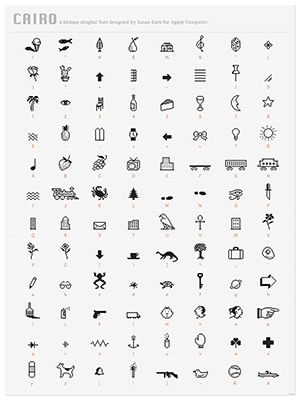
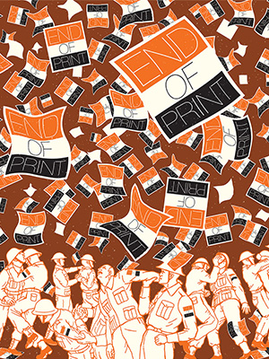
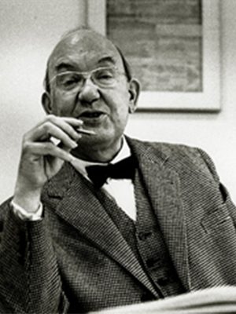
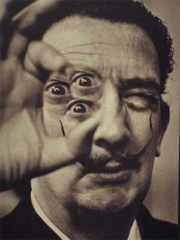
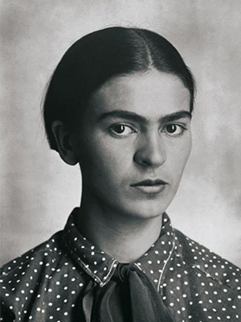
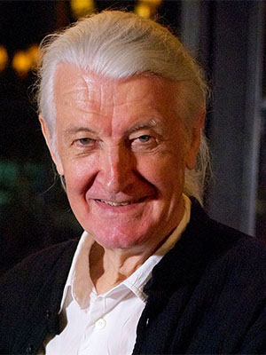

BOOKSTORE
DESIGN
DESIGNERS
Susan Kare

David Carson
I'm a big believer in the emotion of design, and the message that's sent before somebody begins to read, before they get the rest of the information; what is the emotional response they get to the product, to the story, to the painting - whatever it is.

Neville Brody
Jan Tschichold

ART
ARTISTS
Salvador Dali
There is only one difference between a madman and me. The madman thinks he is sane. I know I am mad.

Frida Kahlo
I paint my own reality. The only thing I know is that I paint because I need to, and I paint whatever passes through my head without any other consideration.

Jean-Michel Basquiat
![[Picture of Linus Torvalds]](img/jean.jpg)
TYPOGRAPHY
TYPOGRAPHERS
Matthew Carter
Type is a beautiful group of letters, not a group of beautiful letters.

ENGINEERING
ENGINEERS
Linus Torvalds
Most good programmers do programming not because they expect to get paid or get adulation by the public, but because it is fun to program.
Tim Berners-Lee
Data is a precious thing and will last longer than the systems themselves.
Håkon Wium Lie